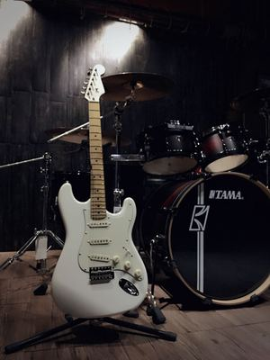

Fender电吉他
基本信息
发展历史
产品图片
基本信息
公司全称
Fender Musical instruments corporation
简称
Fender
建立时间
1946年
风格
爵士，布鲁斯，
乡村，摇滚
吉他工厂
Scottsdale;Cornona;
Nashville;Ensenada;
Dusseldorf;Gothenburg
琴型
star;tele
CEO
Bill Schultz
董事长
Bill Mendello
发展历史
二战时期，LEO FENDER曾经是一名会计师和无线电修理员，战后随着经济的繁荣，吉他逐渐成为一种流行的乐器，FENDER也开始他的乐器制作，很快他的新颖的打破常规的设计也流行起来，被众多乐手所使用，与此同时，根源摇滚(西部摇摆，乡村，节奏布鲁斯)也日渐兴起，于是1953年FENDER开始为这些大师专门设计这款STRATOCASTER，他们也从此确定了今后40年流行音乐的方向。
1954年5月15日，FENDER推出第一批少量的STRATOCASTER，没人想到会取得极大的商业成功并影响了整个乐坛，被人们看重，成为新一代年青人的梦想(一指挥LAWRERCEWELK经常介绍BUDDYMERRILL为我们新一代青年)STRATOCASTER在50年代卖得很好，但没有占领整个市场。
60年代 初DICK DALE因他的高输出性能而率先使用FENDER琴演奏海岸音乐，之后也可以在披头四的单曲"NOWHEREMAN"和64年 后的许多歌曲中听到GEORGEHARRISON和JOHNLENNON使用STRATOCASTER的弹奏，毫无疑问，JIM HENDRIX用他的" STRATOCASTER"对电吉他的演奏进行了革命。
1987年"GUITAR PLAYER"杂志评选STRATOCASTER为80年代最杰出的吉他。他的广阔亮丽的音色被广泛的认同，在 在商业性或设计上，都是历史上最成功的电吉他，使用他的知名乐手还有:ERIC CLAPTON，JEFFBECK，BONNIE RAITT，ROBERT CRAY，STEVIE RAY VAUGHAN，DAVID GILMOUR和MARK KNOPFLER。
70年代CBS收购了FENDER(60年代中期LEO和DONRANDALL将公司卖给CBS)许多吉他手转向使用旧款STRATOCASTER，80年代许多吉他手发现公司生产的新STRATOCASTER逐渐增多。事实上，在1985年，CBS早已拥有了FENDER，这时他掀开了STRATOCASTER崭新的一页。
1990年FENDER的单面目录中第一页就提供了31款不同的STRATOCASTER，1992年增加到44款。那些仍然找不到适合自己的吉他的乐手可以到FENDER专门店定做。店长JOHNPAGE这样形容他们的宗旨:"全新起点的经典吉他"，他说到，"你可以从以前的产品中学到许多优点，在新的设计中创新并将他发扬光大。"
产品图片
